Twist task types
Every task type a Twist lesson uses, with the screen for each one, what the child does, how the answer is marked and the fields a lesson record carries. The screens for built types are taken from the prototype lesson player, which plays the drafted lessons for de-DE and en-GB. The screens for types still to build are rough mocks of the intended behaviour.
The source of truth for fields and interactions is twist/docs/task-types.md; this page follows it. Task counts are drafted tasks on 13 October 2026: 10,417 in all, 6,975 in de-DE and 3,442 in en-GB.
How a lesson runs
A lesson is Warm-up, Learn, Practise and Check, in that order. Practise has three stages of about five tasks: full support (three hints), some support (one hint) and none. A marker screen sits between stages and before the Check. The Check gives no hints and counts the first try only.
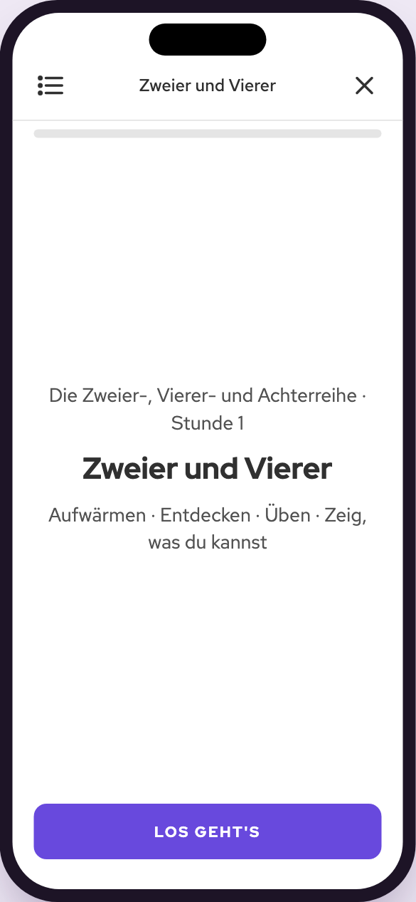
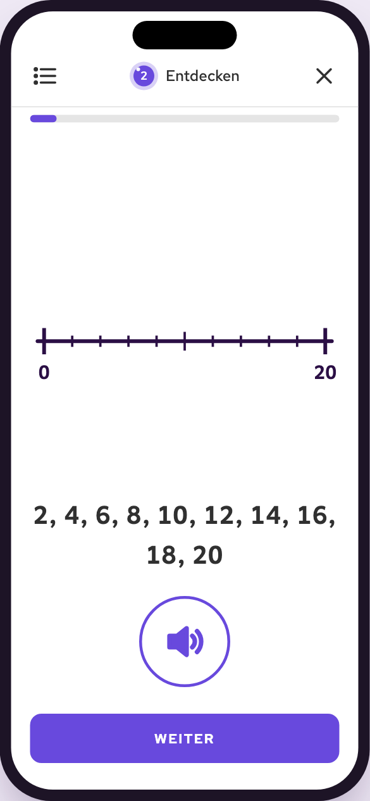
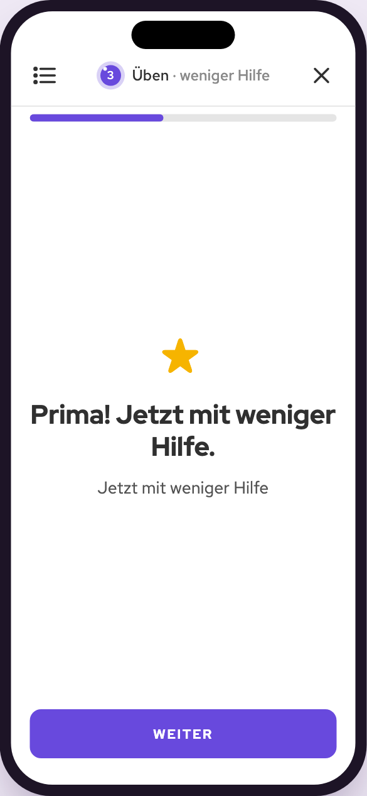
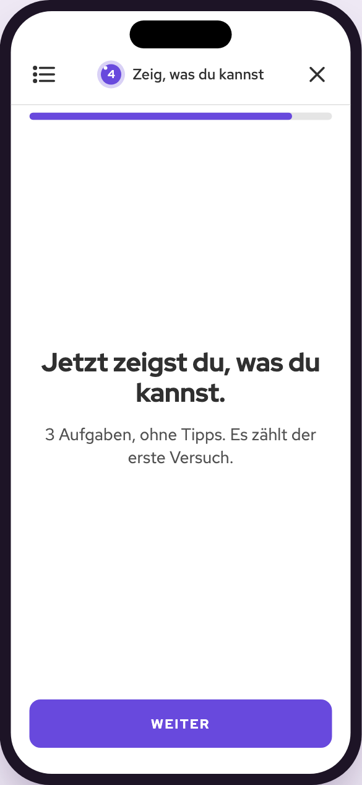
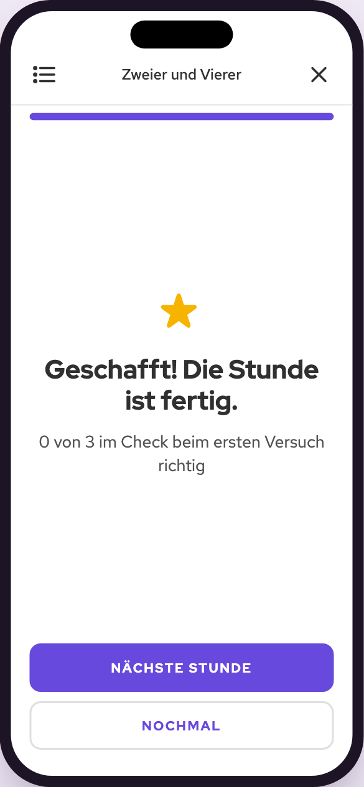
Result per task
first right first time, second right after a miss, helped right after a hint, wrong missed in the Check (the answer is then shown). Practise tasks repeat until right.
Skill check
A lesson that ends a skill has a skill check of five tasks. Four right first time marks the skill Secure; fewer marks it Practised. With fewer than five tasks, all but one must be right.
Difficulty
Each task carries difficulty: easy, core or stretch (core if left out). The full stage starts easy and shows the drawn model; by the none stage the model is often gone and the answer is typed rather than chosen.
The task screen
Every task uses the same frame. The header holds the lesson menu, a badge with the activity number and the activity title (with the Practise stage), and the close button; the progress bar sits under it. Then come the mascot with the prompt in a speech bubble, the visual (a picture or drawn component), the answer area, and the main button. The child selects an answer and taps Prüfen; the result slides up from the bottom.
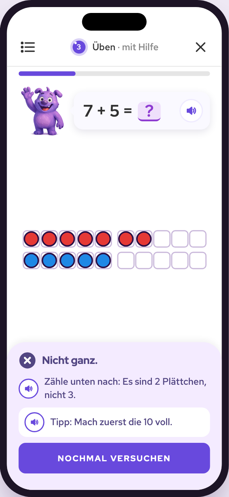
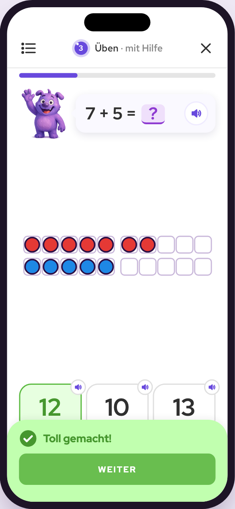
- Header
- Lesson menu (jumps to an activity), activity badge 1 to 4 with the title ("Üben · weniger Hilfe"), close. The progress bar counts Learn screens and tasks.
- Prompt
- The mascot and a speech bubble with the question and a speaker.
textis shown andsayis spoken (ortextwhen there is nosay). The prompt plays when the task opens; the speaker plays it again. Pre-reader lessons (no_reading) show no prompt text. - Visual
show: a picture from the bank (object, withcolourandcount), two pictures, or a drawn component (drawn). 21 drawn components are in use: dots, ten-frame, zwanzigerfeld, number-house, written-calc, number-wall, hundred-field, hundred-square, base-ten, place-value-chart, clock, ruler (a cm ruler with a strip to measure, which can start off zero), part-whole, number-line, rechenstrich, equation, letter-card, word-card, syllable-arcs, writing-lines and the picture groups. Each is drawn from data, never from an image file.- Feedback
- A sheet slides up over the main button. Right: green, a praise phrase, Weiter (moves on by itself after three seconds). Wrong: lilac, "Nicht ganz.", the
feedbackfor the chosen option and then the hint, each with a speaker, and Nochmal versuchen. In a Check a wrong answer shows the right one in green and Weiter. - Hints
- Full stage: up to three, one per miss, in order (strategy, think aloud, direct cue). Some stage: one. None stage and Check: none. After the last hint the next miss shows the answer.
- Flash
show.flash: 2shows the visual for two seconds, then covers it; a "Nochmal sehen" button shows it again, except in a Check.
Rules for every type
Option order
Options are shuffled each time a task is shown. keep_order: true keeps the record order, for scales and fixed pairs (immer, manchmal, nie).
Option keys
A string option is its own key. Otherwise the key is, in order: an explicit key, then count, then the drawn component's own key (clock 3:30, written-calc rows joined with |, a dots array 3x4), then text, colour, object. answer and feedback use these keys.
Option audio
An option gets a speaker when hearing it does not give the answer away: pictures say their word, numbers and sums are read. Never on audio_choice, never for a single letter or syllable, never for a counted group. option_audio overrides.
Two languages
Englisch lessons in de-DE carry say: { de, en }: the German instruction, then the English model, each in its own voice. A picture in such a lesson never says its German word.
Built types
Fifteen types play in the prototype player today. Counts are drafted tasks, de-DE and en-GB.
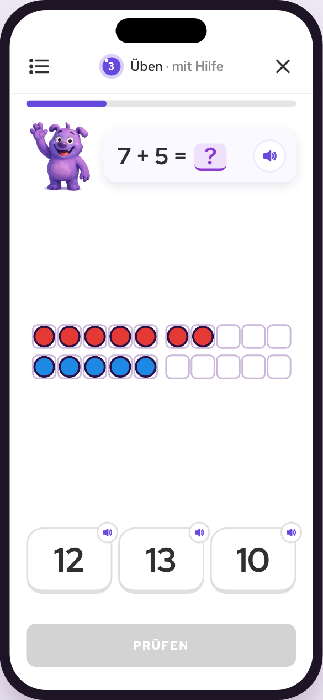
The child taps one of two to four text options to select it, then Prüfen. Tapping another option moves the selection.
- Fields
options(strings),answer,feedbackkeyed by wrong option,keep_order- Marking
- The tapped option's key equals
answer. - Layout
- Up to three short options sit in one row (four very short ones too); options over six characters go two to a row, over fourteen one per line.
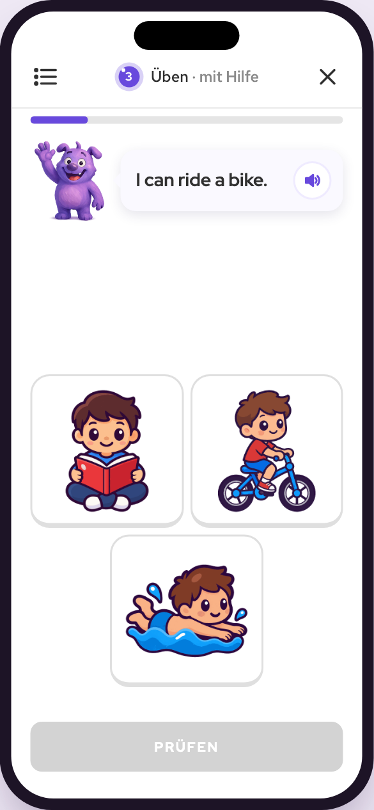
As multiple_choice, with pictures or drawn components as the options. Tiles are square. With a picture above, two or three sit in a row; with no picture above, the tiles take the free space, two to a row and centred.
- Fields
options:{ object },{ object, colour },{ object, count, layout }or{ drawn, … };answeris the option's key- Marking
- Key equals
answer. For drawn amounts the key is the number shown. - Audio
- A picture option says its word, except in a target-language lesson where the word is the answer.
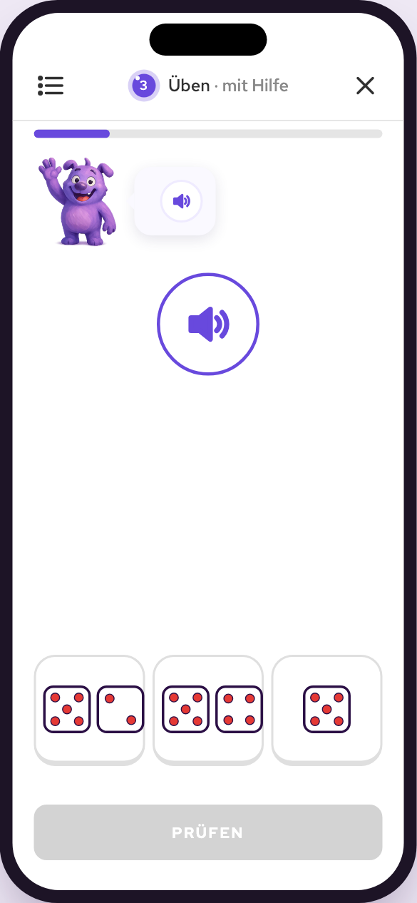
The child hears a sound, word or sentence and taps the option that matches. A big speaker plays it again. The sound is the question, so options never speak.
- Fields
audio:{ sound: de.l }from the sound bank, or{ en: "Red." };options(strings, pictures or colour swatches);answer- Marking
- Key equals
answer. - Sounds
- Phonemes (
de.m,de.o:long,en.sh) are recorded once per voice in the sound bank and reused.
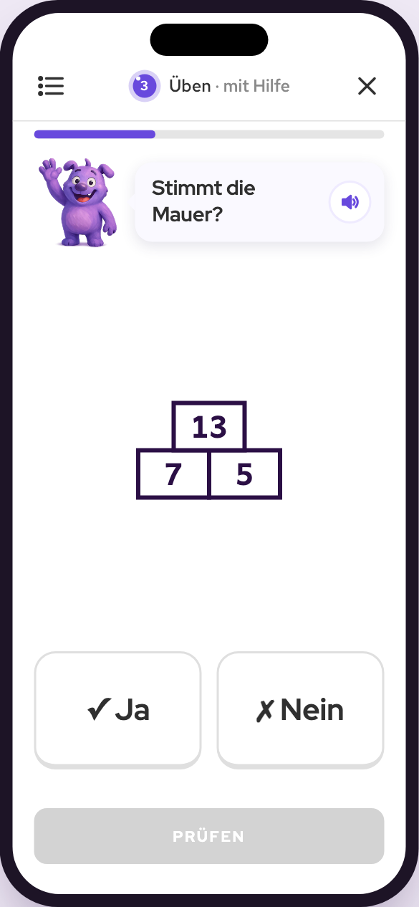
Two big buttons, Ja and Nein (Yes and No): select one, then Prüfen. The question usually sits in say, so the voice can ask it naturally.
- Fields
answer: true or false- Marking
- The tapped button equals
answer. A second miss is impossible, so the hint follows the first.
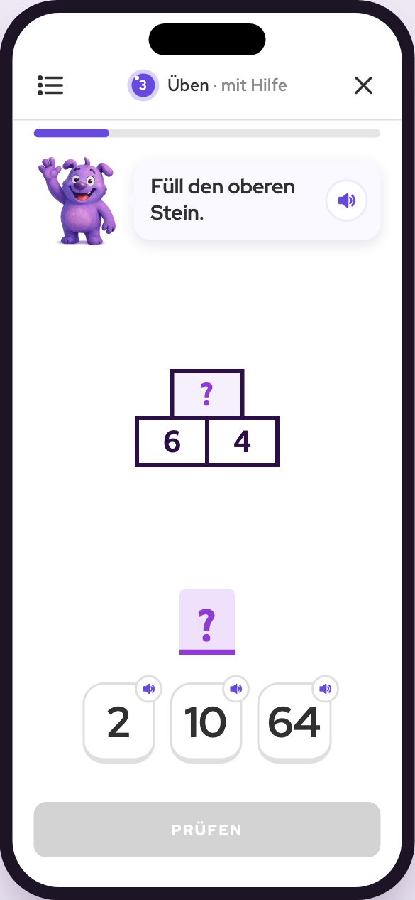
A frame with gaps. The child taps chips to fill the gaps from the left, taps a filled gap to empty it, then taps Prüfen. A gap inside a drawn component (a brick, a cell, a digit) fills the same way.
- Fields
framewith_for each gap,options,answer(a list, one per gap). Steps in a frame are separated by" | ".- Marking
- Every gap equals its answer. One chip can fill more than one gap.
- Layout
- Frames over 16 characters get a smaller font, over 28 smaller again, so a Rechenweg stays on one or two lines.
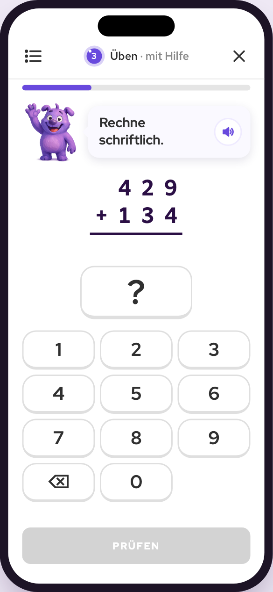
The child types a number on an on-screen keypad and taps Prüfen. Used where choosing from options would make the task too easy, mostly in the none stage and the Check.
- Fields
answer: a string of up to eight digits, no spaces- Marking
- The typed string equals
answer. - Coming
- A letter keyboard; see text_input letters.
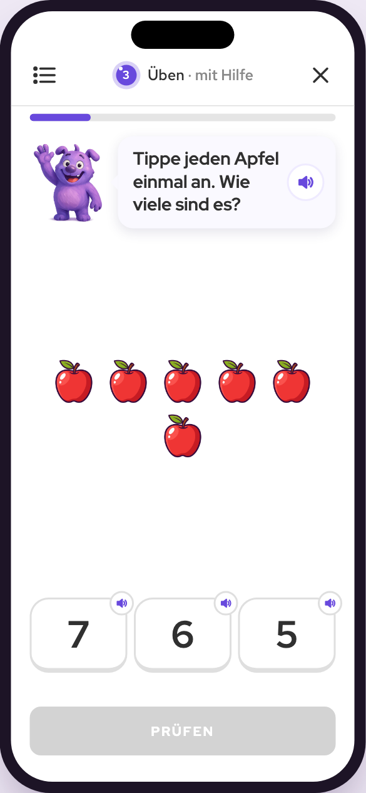
Pictures of one thing. Each tap numbers a picture (1, 2, 3 …) and a picture can be tapped only once, so nothing is counted twice. Then the child taps how many.
- Fields
show: { object, count, layout: row | scattered },options,answer- Marking
- The tapped number equals
answer; tapping the pictures is not required. - Layout
- Scattered pictures sit on a loose grid with small offsets, so they never overlap.
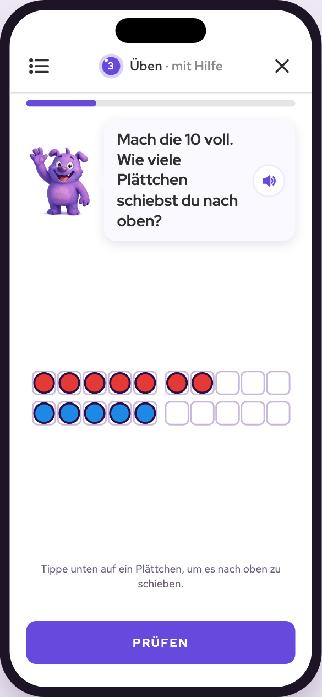
A Zwanzigerfeld. The child taps counters in the second row to move them up until the first row is full, then taps Prüfen.
- Fields
show: { drawn: zwanzigerfeld, filled: [7, 5] },total_items,answer(how many to move)- Marking
- Counters moved equals
answer. A wrong try puts them back.
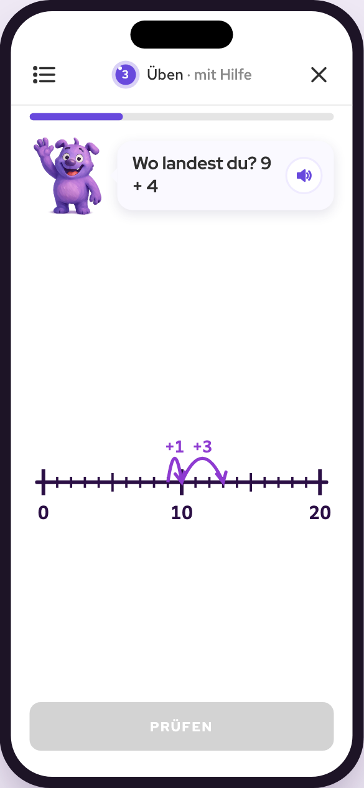
A number line. The child taps a tick, a marker shows where (never the number), then Prüfen.
- Fields
show: { drawn: number-line, from, to, labels, jumps, step },answer,feedbackkeyed by tapped value.stepsets which ticks can be tapped (1, 5, 10, 100 …).- Marking
- Tapped tick equals
answer. Jumps can be negative and are labelled −1.
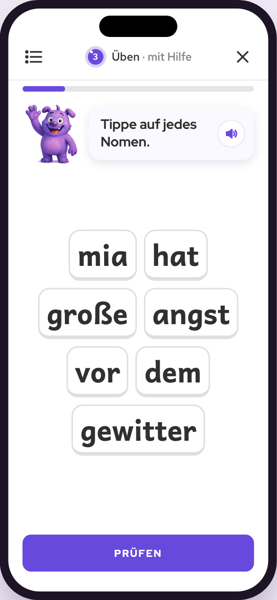
Letter or word cards. The child taps every card that matches, then Prüfen. Tapping again unselects.
- Fields
show: { drawn: letter-card, text }(cards split on spaces),spans(the cards to find)- Marking
- The set of tapped cards equals the set of spans. Trailing
. , ! ? ; :are ignored when comparing, so the spanhochfinds the cardhoch.; quotation marks are not ignored. - Wrong
- Wrongly tapped cards turn red, then all cards clear for the next try.
Writing lines with a letter or numeral. Trace mode draws it dashed with a green start dot; copy mode shows a model on the left and the child writes beside it. Fertig ends the task.
- Fields
show: { drawn: writing-lines, text, mode: trace | copy, arrows },char- Marking
- The prototype accepts any ink. The intended check compares the strokes with the letter's path and start point.
- Hints
- None in any stage; the guide is the help.
- Coming
- Joined handwriting (Schreibschrift) and stroke order.
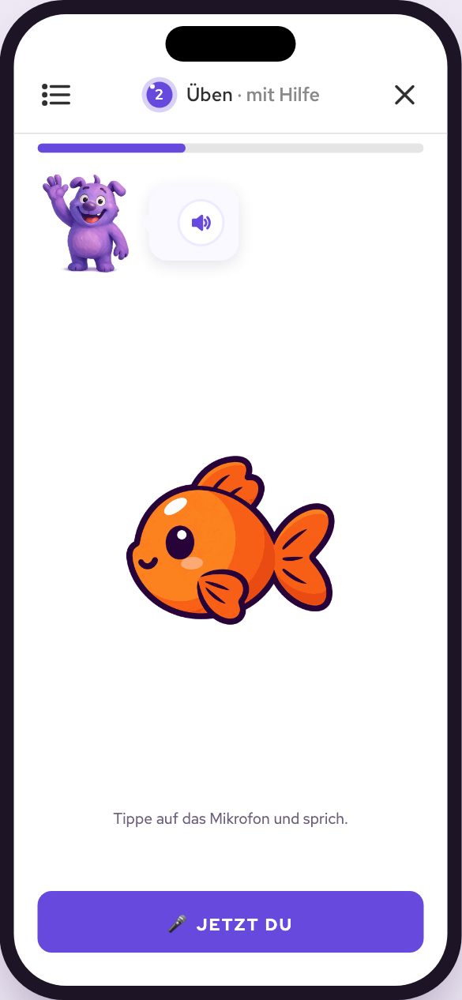
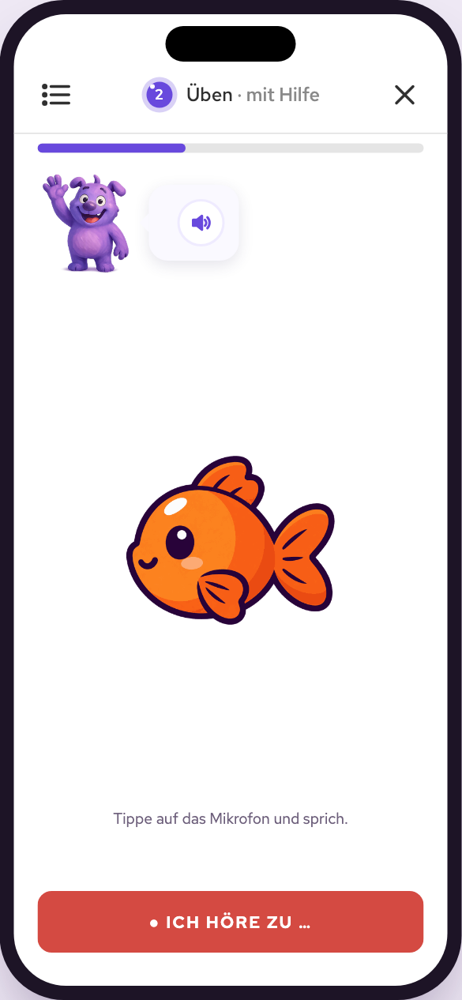
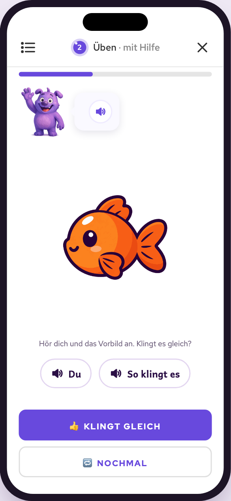
The child says a word or short sentence aloud. Speech is not marked yet, so every speak task runs as a fallback: the child records, hears the recording next to the model and decides whether it sounded the same.
- Steps
- The prompt plays: the instruction, and the model when
sayhas one. - "Jetzt du": the app records for up to four seconds; a second tap stops early.
- The app plays the recording, then the model. Both stay on screen as chips ("Du", "So klingt es").
- "Klingt gleich" goes on; "Nochmal" records again.
- The prompt plays: the instruction, and the model when
- Marking
- Never scored and never wrong. Speak tasks are not used in a skill check.
- No mic
- With no microphone or no permission, the recording step is skipped: the child speaks, hears the model and taps "Klingt gleich".
- Privacy
- The recording stays on the device and is deleted when the task closes.
- Fields
say({ de: instruction, en: model }),show,expected_text. The model issayin the target language, or elseexpected_textsaid as a sentence, so a task that gives no model up front still lets the child check. The same fields work when speech is marked later.
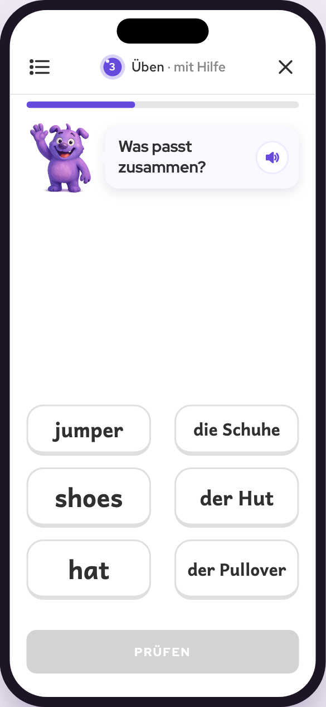
Two columns. The child taps a left item, then the right item it belongs to; a made pair gets a coloured border (the left item's colour when it is a colour). Prüfen checks all pairs; wrong pairs are undone.
- Fields
pairs(2 to 6), each{ left, right }; a side is a picture, a drawn component or text, with its ownsayif it should speak- Marking
- Every pair joined as in the record. The right column is shuffled.
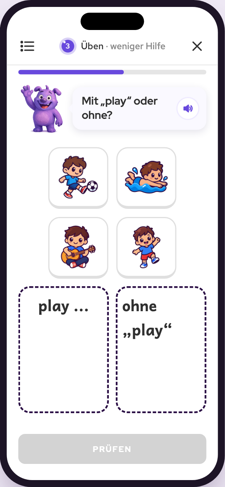
Items at the top, two to five bins below. The child taps an item, then a bin; tapping an item in a bin puts it back. Prüfen checks every item; wrong ones go back.
- Fields
bins({ id, show, say }),options({ object, bin }; Twist calls the bincorrect_bin_id)- Marking
- Every item in its bin.
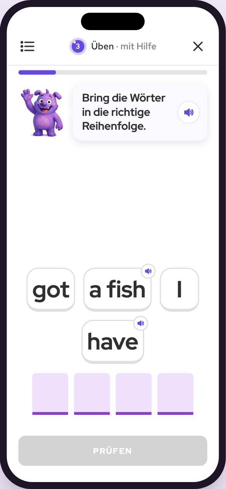
Cards above, empty slots below. The child taps cards in order to fill the slots from the left; tapping a filled slot empties it. Prüfen checks the whole order; wrong cards go back.
- Fields
options(strings or pictures, may include extra cards),slot_count,answer(cards in slot order; Twist calls itcorrect_arrangement)- Marking
- Slots equal
answer. - Coming
- Picture and sentence cards for story order; letter cards to build a word.
Types to build
The skills not yet drafted need twelve more types. The first four are already in the backend's type list. Screens are mocks; fields are a proposal to settle when the first lesson uses the type. The skill counts are open skills that need the type.
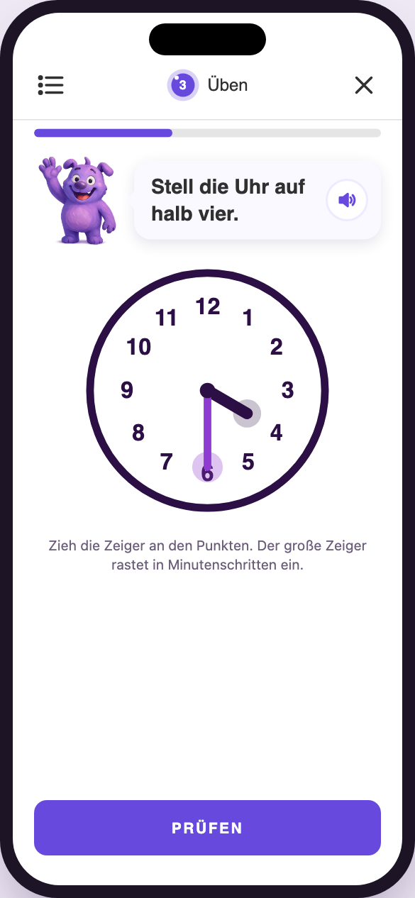
The child drags the hands of the drawn clock to a time. The minute hand snaps to steps; the hour hand moves on with it, as on a real clock, and can also be dragged.
- Fields
show: { drawn: clock, hour, minute }as the start,snap(30, 15, 5 or 1 minutes),answer: "3:30"- Marking
- Minute hand on the answer's minute; hour hand within the right hour's sector.
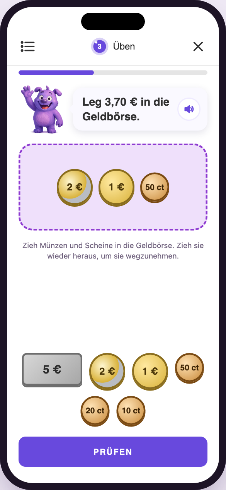
The child drags items onto targets: coins and notes into a purse, a label onto a picture, an object to a place in a scene, a piece into an outline. Dragging an item out takes it back.
- Fields
items(pictures or drawn coins, each with an id and optionalvalue, and whether it is unlimited),targets({ id, show }),check: place | count | total,answer- Marking
place: each item on its target.count: the number of items on a target.total: the sum of values on a target (3,70 € in any coins).
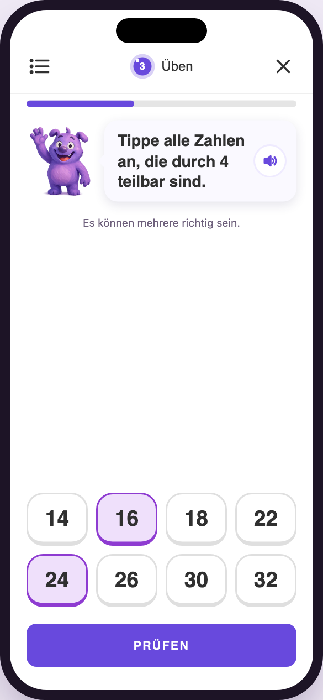
The child taps every option that fits, then Prüfen. A line under the prompt says that more than one can be right.
- Fields
options(as image_multiple_choice),answer(a list of keys)- Marking
- The tapped set equals the answer set. On a miss, wrong taps turn red and missing ones are not revealed until the hint says so.
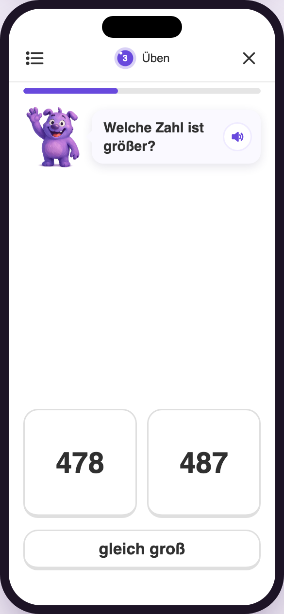
Two things side by side; the child taps the one that is heavier, longer, bigger or more likely. An optional third button says they are the same.
- Fields
sides: [left, right](each a picture, drawn component or text),allow_equal,answer: left | right | equal- Marking
- The tapped side equals
answer. The app may swap the sides; the answer follows.
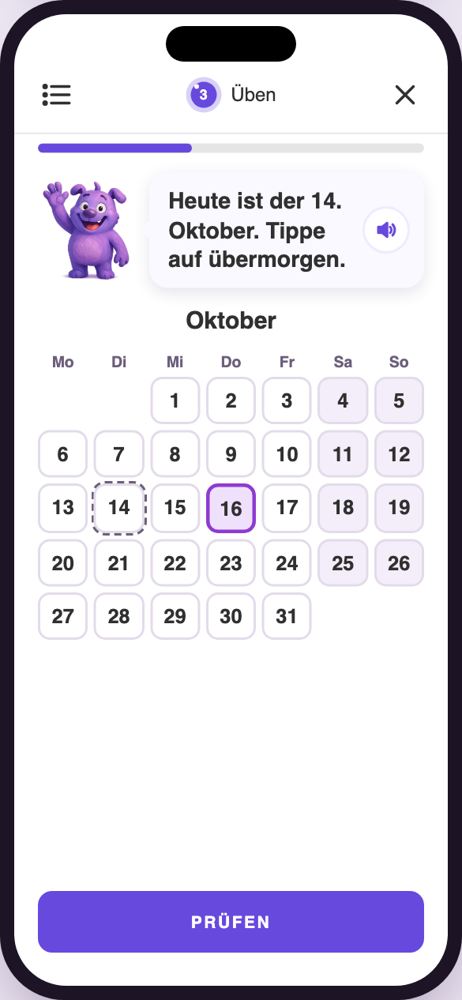
The child taps a place in a picture or drawn component: a day in a calendar, a square on a map, a symmetry axis, the part of a scene a sentence describes. The tapped region is outlined; Prüfen checks it.
- Fields
show(a drawn component whose parts are regions, or a picture withregions: id and shape),answer(a region id, or a list for several)- Marking
- The tapped region equals
answer. Regions are generous so a child's finger can hit them.
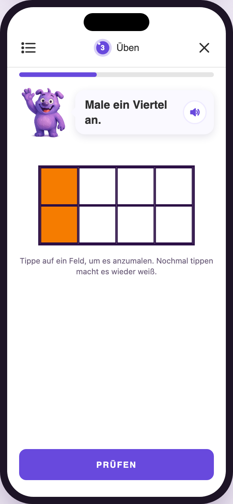
The child taps cells or parts to colour them; a second tap clears one. Prüfen checks.
- Fields
show: { drawn: fraction | grid, … },colour, and eitheranswer: { count }(any 2 of 8) oranswer: { cells }(exact cells, for a mirror image)- Marking
- By count or by the exact set of cells.
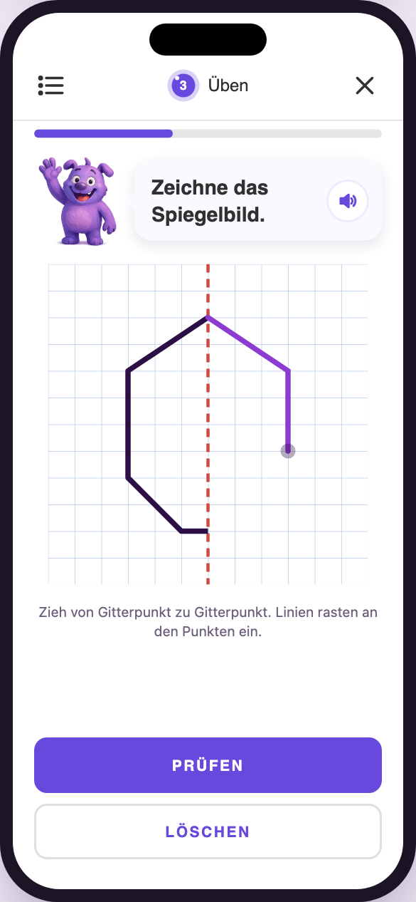
The child joins grid points with straight lines by dragging from point to point. Lines snap to the points. Löschen clears the child's lines; given lines stay.
- Fields
show: { drawn: grid, size, given: [segments], axis },answer: [segments](each segment two points)- Marking
- The set of drawn segments equals the answer, in any order and either direction; a long line may be drawn as several short ones.
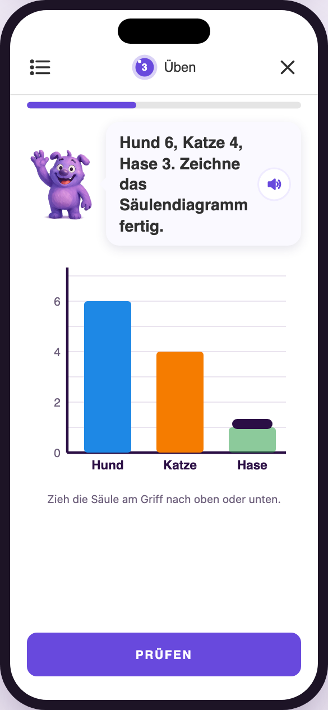
The child sets the height of each bar by dragging its handle, or the number of pictures or tally marks in each row by tapping.
- Fields
show: { drawn: chart, kind: bar | pictogram | tally, categories, scale, given },answer(a value per category)- Marking
- Every value equals its answer. Bars snap to the scale's steps.
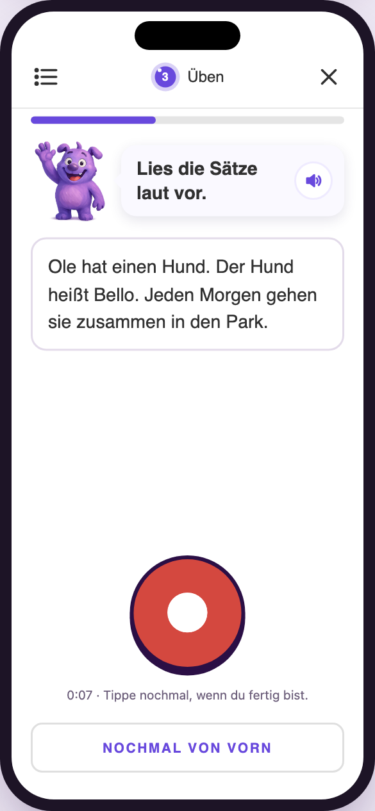
A longer spoken answer: reading a text aloud, a poem, a short talk. The child records, plays it back and can record again. It works like the speak fallback with a longer time and no model.
- Fields
show(a passage or picture),max_seconds,checklist(what to listen for)- Marking
- Not marked. Whether recordings are kept, shown to a parent or scored is still to be decided.
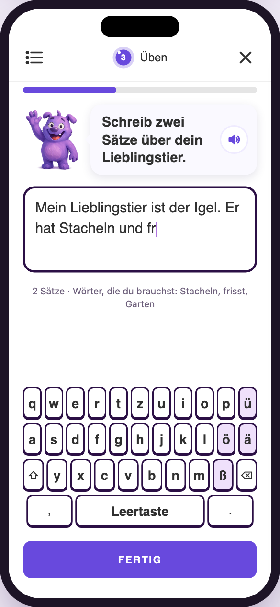
The child types a short text with the letter keyboard and a scaffold: a model text, sentence starters or a word bank. A checklist below says what the text should have.
- Fields
scaffold: { model, starters, words },checklist,min_sentences- Marking
- Not marked yet: a self-check against the checklist, a grown-up's confirmation and language-model feedback are the options under discussion.
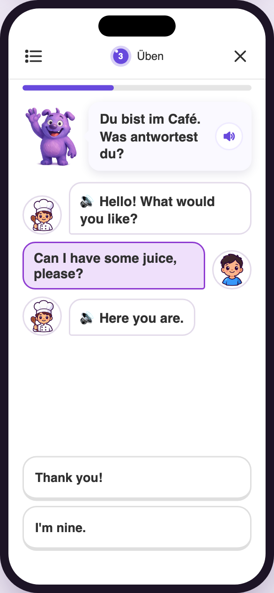
A scripted conversation. The other person's lines play as they appear; at each of the child's turns they choose a reply (or say it, once speech is marked). A wrong reply gets feedback and the turn repeats.
- Fields
turns:{ who, say, show }for the other person,{ child: { options, answer } }for the child- Marking
- Each child turn as multiple_choice; the task counts as right when every turn was right first time.
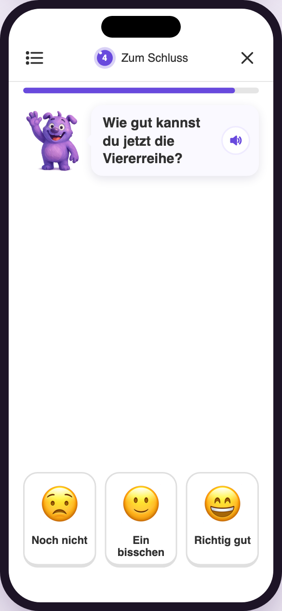
The child picks how well they can do something: Noch nicht, Ein bisschen, Richtig gut. Used at the end of a lesson or after writing.
- Fields
can_do(the statement),scale: 3- Marking
- Never scored. The answer goes to the parent view next to the skill's result.
New options on built types
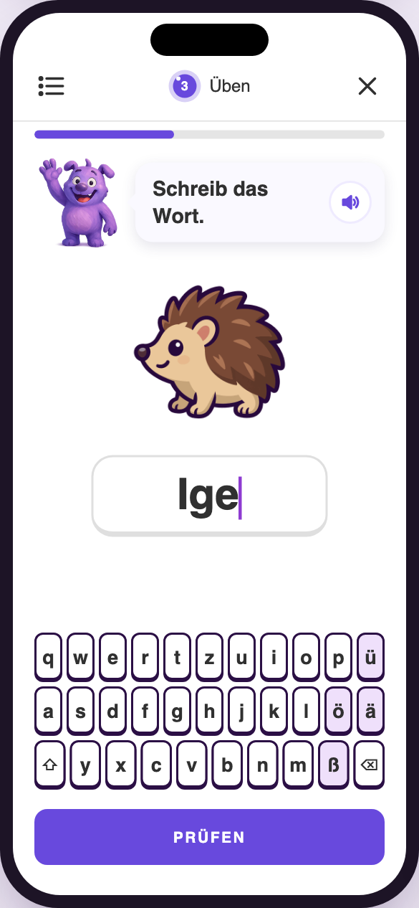
A letter keyboard in place of the keypad: QWERTZ with Umlaute and ß for de-DE, QWERTY with grapheme tiles (sh, ch, ee) for England. Shift gives a capital. The answer is a word or short sentence.
- Fields
keyboard: letters,answer,accept(other right spellings)- Marking
- Exact match, capitals included (Nomen are capitalised in German). Leading and trailing spaces are ignored; inner spaces count.
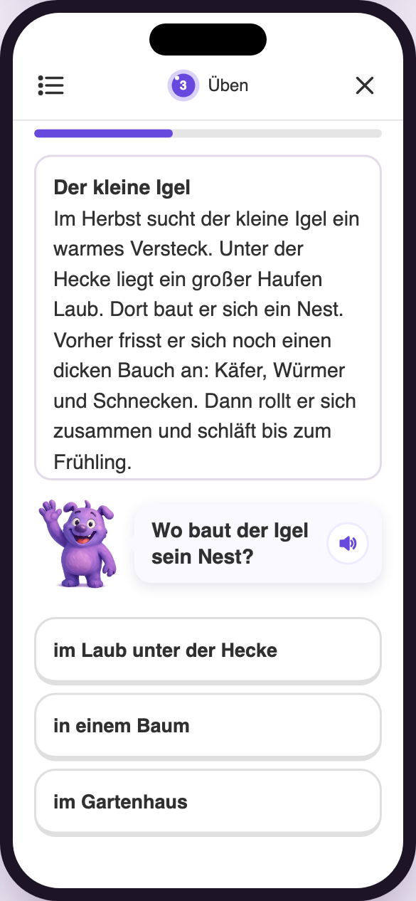
A text of several paragraphs with a heading, scrollable above the question, for any task type. The same text serves several tasks in a row and stays in place between them. audio: passage is the listening version: a longer recording with play, pause and replay.
- Fields
show: { passage: { title, paragraphs } }, or apassageid shared by several tasks- Marking
- As the task type it is added to.